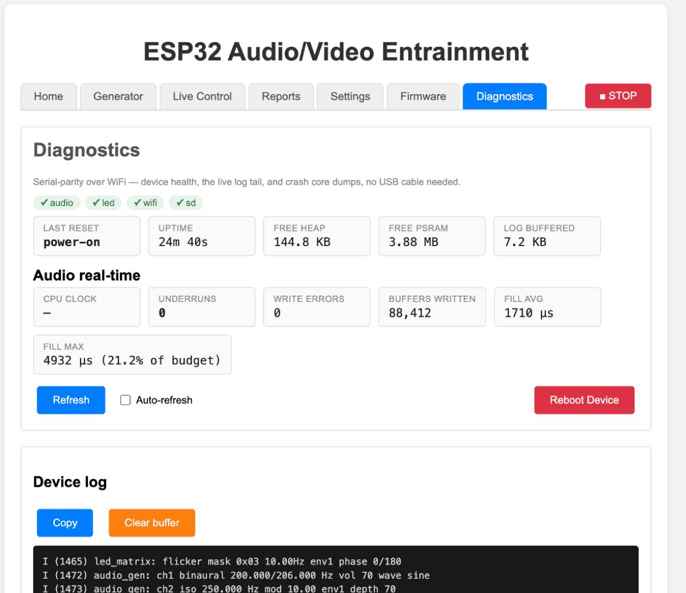

Troubleshooting
Every entry here is a failure that actually happened and was diagnosed, with the measurement or the commit behind it. Several of them look exactly like a different fault than they are, which is why they are worth reading before you start pulling wires.
Start with Diagnostics
The Diagnostics tab is deliberately a no-cable-needed substitute for a serial console. Before anything else, look at:

- the row of subsystem chips — a red chip names the subsystem that failed to start and why. Boot is non-fatal by design, so the device comes up in a degraded state specifically so you can diagnose it from this page;
- Last reset — whether it rebooted, and why;
- the Device log at the bottom, which is the single most informative thing on the device. Raise a category under Log levels if you need more detail.
The whole interface has frozen — but the device is fine
Symptom. Every part of the page stops responding. Requests
sit pending forever: no error, no timeout, no spinner that ever finishes.
Meanwhile curl http://esp32-ave.local/api/state from a terminal
answers in about 40 ms. It looks unmistakably like a device fault.
What is actually happening. It is not a device fault, and
the curl result is the clue that misleads everyone: curl is not
inside your browser's connection pool. The device answers HTTP on one task
with seven sockets, three of which it reserves internally, while also
generating audio and driving LEDs to hard real-time deadlines. Your browser
will happily open six connections to one host. Once the page's requests pile
up and occupy all six, every subsequent request from that page queues behind
them indefinitely — including you clicking a button. The pile-up is
self-reinforcing: it made /api/state take 20 seconds, and a
20-second response against a one-second polling interval stacks twenty deep.
Measured on a freshly booted device with no browser attached, that same
endpoint answers in 33–49 ms. There is no slow handler to find.
What was fixed. The page now funnels all of its device traffic through one gate that permits at most two requests in flight, shares identical concurrent reads, and gives every request a deadline so a stalled connection is released instead of leaked. Its background pollers schedule the next run only after the previous one finishes, so overlap is structurally impossible.
What to do if you still see it.
- Count your tabs. The two-request budget is per page. Three or four tabs of the interface are three or four independent pollers competing for the same six browser connections and the same handful of device sockets. Close all but one.
- Reload the one you kept. That releases every connection the page was holding, and it recovers immediately.
- Confirm the device is healthy before suspecting it:
curlfrom a terminal, or open the page in a different browser. A fast answer there means the device was never the problem.
The interface returns "Nothing matches the given URI"
Symptom. Every /api/... call works perfectly —
you can confirm it with curl — but the web page itself 404s with
Nothing matches the given URI. This reads exactly like a broken or
unmounted filesystem on the device, which is where everyone looks first and
where the problem is not.
What is actually happening. The firmware registers each API route individually and the web interface last, as a catch-all. When the number of routes exceeds the configured limit, the server fails the last registrations — which is the catch-all. So the API survives intact and only the user interface disappears. The one piece of real evidence sits far above the 404s in the boot log:
httpd_register_uri_handler: no slots left for registering
handler
What to do. This is a firmware-build issue, not something you can configure. Current firmware carries headroom and explicitly checks that last registration, logging an error that names the limit and states that the API will keep working — so the next occurrence announces itself at boot instead of impersonating a filesystem fault. Read the device log on Diagnostics, and update your firmware.
A genuinely unmounted filesystem looks different: the device serves a small built-in fallback page rather than returning 404.
Saving Settings fails with a 400 naming a GPIO
Symptom. Save failed: Error: HTTP 400, with a
message like settings apply failed: led_data_pin = GPIO 6: wired to the
SPI flash or PSRAM.
This is a guard working correctly. That pin is bonded to the memory the firmware runs from. Accepting it would write a brick to permanent storage, and the resulting boot loop can only be fixed with a USB cable. The refusal is deliberate and total — there is no override, because nothing legitimate wants those pins.
Two things to know: the save is all-or-nothing, so none of your other edits were applied either, and the WiFi password field is the one casualty you must re-type because the device never sends it back to the page. Full detail in Settings.
There is no sound at all
- Check the chips on Diagnostics.
A red
audiooraudio_outchip names the reason directly.audio_outcan also read skipped: audio pipeline degraded, which means the failure is upstream. - Read the boot log for a pin conflict. Look for
GPIO 5 claimed by BOTH 'button' and 'i2s_bck' — peripherals will interfere; fix one in Settings. This exact class of mistake has produced total silence twice on this hardware, and it is maddening because the symptoms are perfect: the codec locks its clocks and never latches a sample. One log line versus a multi-hour hardware hunt. - If your board has an I2C codec, check its reset pin. A
codec held in reset acknowledges nothing, so the entire I2C bus scans as
empty and it looks like a dead chip or a broken bus. In
Settings → Audio Codec, either
set Codec ~RESET pin to the pin that is actually wired, or
to
-1if your board ties codec reset to board reset. - Check the amp. Amp enable pin in
Settings → Audio I2S must name
the GPIO that switches your amplifier on, or
-1if there is nothing to switch. - Check volumes. Channel vol in Live Control, and Maximum volume in Settings. A master cap left low silences everything.
Everything is far too quiet, even at maximum
Symptom. Channel volume at 100, master cap at 100, and you are still turning your amplifier or headphones up further than feels reasonable.
This is expected and it has been measured. The audio engine permanently reserves headroom for all sixteen of its channels regardless of how many are actually playing. A single sine at vol 100 with the cap at 100 reaches about −27.1 dBFS at the device's output; white noise under the same conditions sits at −33.1 dBFS. That is roughly 24 dB of range going unused, and no shipped session uses more than four channels at once.
What to do. Raise Maximum volume (0-200) in Settings → Audio I2S. It takes effect immediately and boosts above 100.
Background audio clicks or drops out, roughly once a minute
Symptom. During a session with spoken narration, the audio stutters — short gaps or clicks, often in clusters about a minute apart, and typically starting after you stop touching the laptop or the phone screen locks.
What is actually happening. This only affects sessions where the browser is streaming the audio — the ones whose status says Playing (speech merged into background). The browser has to deliver audio to the device continuously in real time, and the device's receive buffer runs shallow. A 6-agent investigation found two separate regimes: a structural floor from the network window and server task priority that keeps the buffer about one frame deep, and — the once-a-minute clustering specifically — the operating system throttling timers in a backgrounded or screen-locked browser, which stalls the feed. There is also a WiFi-level ceiling above both.
What to do.
- Put the phrases on the SD card. This removes the browser from the playback path entirely and the problem cannot occur. See offline playback. This is the real fix.
- Failing that, keep the tab in the foreground and stop the screen from locking. The page already works around timer throttling with a scheduling mechanism browsers do not throttle, and plays a looping silent audio clip during the push to earn the operating system's background-audio exemption — but that is best-effort (iOS Safari in particular varies by version) and the margin is thin, so a foregrounded tab with the screen on is still materially better.
- Reduce the distance to your access point. The ceiling here is partly radio.
Sessions with no speech never go down this path — the device plays those by itself — so if a particular session stutters and others do not, speech is almost certainly why.
A session plays but there is no narration
- With the browser closed: the phrase files are not on the card. A missing phrase is logged and skipped — it never aborts a session — so you get the session minus the voice. Run Settings → ⇪ Sync speech to SD card again.
- After changing the speech engine: different engine, different audio, different filenames. Re-sync.
- With the browser open and speech failing to synthesise: the Puter engine needs internet in the browser and may need to open a sign-in popup — if your browser blocked that popup, allow it and try again. The Google engine needs the device to be online instead. Neither works on the device's own access point, which has no internet behind it.
The SD card is not detected
The sync button reports No SD card detected on the device. Insert one and reboot it.
- The card is mounted at boot, so inserting one into a running device is not enough — power-cycle it.
- It must be a single FAT32 partition. The firmware will never format a card for you; it is your card and may hold your only copy of something.
- Check the four pins in Settings → SD Card against how your board is wired. Stored defaults can predate your board — verify the live values before blaming the hardware. On some boards the card's chip-select is a solder bridge that has to be closed, and the SPI lines are not broken out to headers at all.
- If the SD Card group is not on the Settings page at all, your firmware was built without SD support.
One LED channel seems dead, or the wrong zones flicker
Before assuming a fault: on a measured unit, LED channel 5 produced no light either optical sensor could detect — it sat at the noise floor — and channel 6 was visible despite never being addressed by any session. The conclusion was that channel 5 is probably simply unpopulated on a four-zone build rather than faulty. Do not assume all eight logical channels drive physical LEDs on your device.
The same measurement found that the per-eye split on that unit was channels 1 + 2 against channels 3 + 4, not the pairing the session library most often uses. The practical diagnostic, if you want to know your own device's map, is to drive each channel at a distinct flicker rate in one session and watch which zones do what — it identifies the whole map at once and needs no knowledge of the wiring.
Also check Settings → LED → Channel map (CSV), which is what assigns each physical pixel to a logical channel, and LED count.
Two LED zones at opposite phase cancel instead of alternating
If you set up a complementary antiphase pair and the flicker nearly disappears rather than alternating, the masks may each be taking one LED from each eye. That gives every eye one in-phase and one out-of-phase source, and they cancel within the eye — measured at 25.8 dB of fundamental cancellation at 178.1° on one session. Check which channels belong to which eye on your device before trusting a mask.
A channel's waveform changed to sine by itself
Known, unfixed, and only affects hand-written timelines. An
audio line that omits the trailing waveform column resets that channel to sine
rather than leaving it as it was — a - in the column means "leave
unchanged", but an absent trailing column does not. It was left alone
deliberately: it affects only test files, no shipped session, and changing the
semantics would change what every existing file plays. If a tone loses its
timbre partway through a session you wrote, add the waveform column
explicitly.
Audio and light feel slightly out of step
Measured optically with solar cells and a multi-channel audio interface, audio sits consistently 2.5–3.5 ms ahead of the light across twelve runs — a 1 ms spread, independent of where an entry falls and of whether the flicker rate changed. This is the state after a series of fixes; it started as a random 0–23 ms offset re-rolled on every session start, plus a 25–42 ms jump at every rate change.
A few milliseconds is far below perception, so if audio and light feel obviously desynchronised to you, suspect something else — a browser-streamed background track (above), or an old firmware. Update and re-check.
A session got noticeably quieter when more layers came in
Fixed; update your firmware. The mix used to scale by the number of active channels, so enabling two more channels partway through a session pulled the original one down by about 9.5 dB — reported from listening, then reproduced. It now scales by the actual sum of amplitudes instead, which keeps multi-carrier sessions clip-safe without the duck.
Frequency ramps do nothing on some audio channels
Fixed; update your firmware. A bitmask truncation meant audio channels 8 to 15 silently ignored every ramp instruction — they would jump to the target instead of gliding, or sit still. It affected fourteen sessions in the shipped library. Nothing in the UI reported it; the sessions simply did not do what they said.
The device rebooted on its own
- Diagnostics → Last reset names the cause.
- If a crash dump was captured, the Crash core dump card offers Download core dump and shows the command to decode it against your build. Erase clears it so the next crash is unambiguous.
- No dump stored does not necessarily mean no crash — if core-dump-to-flash is not enabled in your build, dumps are never captured. The card says so.
- Check Free heap and Free PSRAM, and the Underruns and Write errors counters in the Audio real-time block, before and after. A healthy long run shows zeros there.
No session report appeared at the end
- The report is fetched when the page sees the timeline stop. If the page was closed, reloaded, or wedged (see the first entry) during the session, nobody was watching for that moment.
- Settings → Store reports in set to none means display only — nothing is kept.
- A failed fetch shows Report fetch failed: … in the status line.
The Community session list is empty
That view fetches sessions published online, directly from your browser. It needs internet in the browser — it works on a normal WiFi or a phone hotspot, and not on the device's own access point, which has no internet behind it.
A Settings dropdown option is greyed out
Options marked (not compiled in) are LED backends or audio codecs your firmware was not built with. The list is capability-driven on purpose, so you can see what this build can actually drive. Selecting one is not possible; changing it requires different firmware.
Cannot reach the device at all
- Type
http://explicitly — browsers sometimes forcehttpsand then report the site unreachable. The device does not do TLS. - Try
http://esp32-ave.local, then the IP from your router's client list. Some networks block the multicast that.localnames depend on. - Remember the device is 2.4 GHz only. It cannot see a 5 GHz network.
- If it could not join your WiFi it will be running its own access point:
join
ESP32-AVE-Setup(passwordentrain123) and go tohttp://192.168.4.1. - To force that deliberately, hold the hardware button down while powering the device on. It boots straight into setup mode, skipping the join.
More detail in Connecting to the device.
Collecting information for a bug report
- Play the session that misbehaves, and press the hardware button at the moment the problem happens — that writes a full state snapshot into the log, timestamped against the session.
- When it ends, open Reports, give the report a title, and describe what you observed in Comments.
- Use ⬇ Download on both the Device log and the Browser log. The device log is the full session, not just the last fragment the device's buffer holds.
- Add a screenshot of Diagnostics — the subsystem chips, reset reason and audio counters — and the firmware version from the Firmware tab.